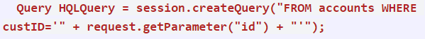

SQL injection, also known as SQLI, is a common attack vector that uses malicious SQL code for backend database manipulation to access information that was not intended to be displayed. This information may include any number of items, including sensitive company data, user lists or private customer details. Injection flaws, such as SQL, NoSQL, OS, and LDAP injection, occur when untrusted data is sent to an interpreter as part of a command or query. The attacker’s hostile data can trick the interpreter into executing unintended commands or accessing data without proper authorization
There are two types of input injection:
SQL Injection: Targets the tradition database system. It attacks usually involve injecting unauthorized statements into the input fields of applications.
NoSQL Injection: Targets big data platforms. This type involves inserting malicious statements into big data components like Hive, MapReduce. In SQL and NoSQL successful input injection attack can give attacker unrestricted access to an entire database.
Scenario #1: An application uses untrusted data in the construction of the following vulnerable SQL call:
Scenario #2: Similarly, an application’s blind trust in frameworks may result in queries that are still vulnerable, (e.g. Hibernate Query Language (HQL)):
In both cases, the attacker modifies the ‘id’ parameter value in their browser to send: ‘ or ‘1’=’1. For example:
This changes the meaning of both queries to return all the records from the accounts table. More dangerous attacks could modify or delete data, or even invoke stored procedures.
Preventing injection requires keeping data separate from commands and queries
https://owasp.org/www-project-top-ten/2017/A1_2017-Injection